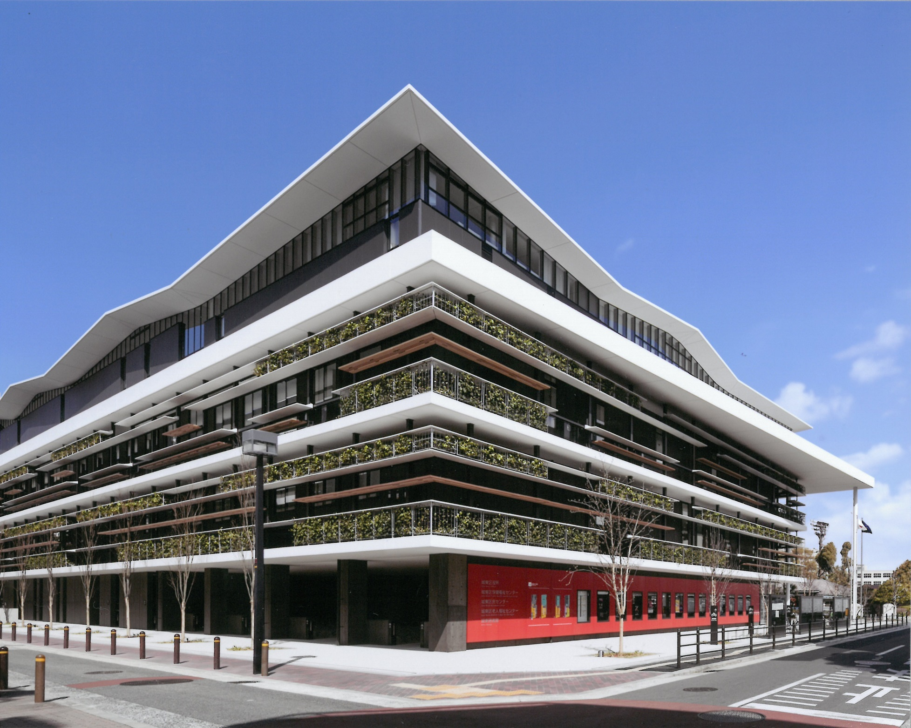
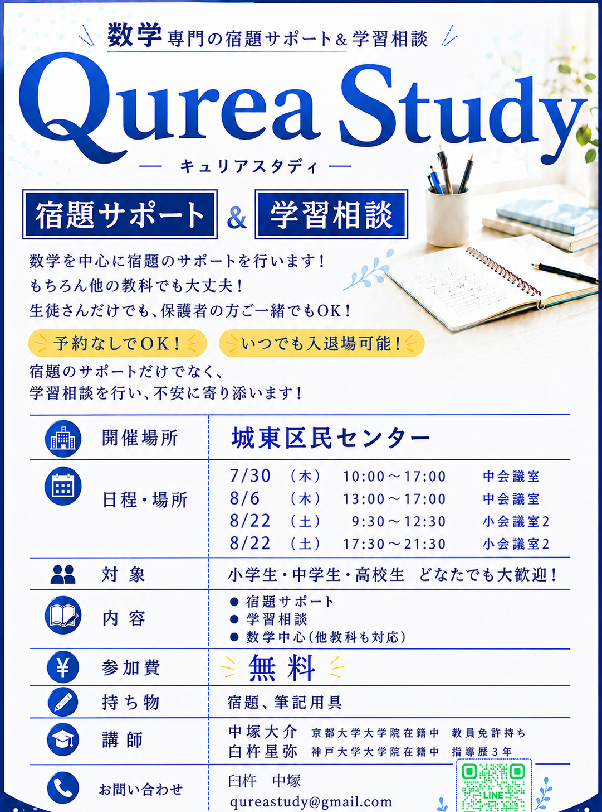

城東区民センターで開催・参加費無料
夏休み 宿題サポート＆学習相談（無料・予約不要）
数学を中心に宿題のサポートを行います。もちろん他の教科でも大丈夫です。生徒さんだけでも、保護者の方とご一緒でも参加できます。予約は不要です。開催時間内であれば、来る時間も帰る時間も自由です。宿題のサポートだけでなく学習相談も行い、勉強の不安に寄り添います。

Point
予約なしで参加できる無料イベント
数学を中心に、他教科の宿題にも対応します。小学生・中学生・高校生どなたでも歓迎です。開催時間内に、城東区民センターへ直接お越しください。
- 参加費無料
- 予約不要
- 途中参加・途中退出も自由
- 数学中心（他教科も対応）
- 小学生・中学生・高校生対象
Schedule
日程・会場
会場は城東区民センター内です。日程により部屋が異なりますのでご注意ください。
| 日程 | 時間 | 会場 |
|---|---|---|
| 7/30（木） | 10:00〜17:00 | 中会議室 |
| 8/6（木） | 13:00〜17:00 | 中会議室 |
| 8/22（土） | 9:30〜12:30 | 小会議室2 |
| 8/22（土） | 17:30〜21:30 | 小会議室2 |
開催時間内であれば、いつ来ても、いつ帰っても大丈夫です。途中からの参加や途中での退出も問題ありません。開催場所は「城東区民センター」です。会場までの詳しい行き方は、城東区民センターの案内をご確認いただくか、LINEでお問い合わせください。
Overview
開催概要
| 開催場所 | 城東区民センター | |
| 対象 | 小学生・中学生・高校生 どなたでも歓迎 | |
| 内容 | 宿題サポート／学習相談／数学中心（他教科も対応） | |
| 参加費 | 無料 | |
| 持ち物 | 宿題、筆記用具 | |
| 講師 | 中塚（京都大学大学院在籍中・教員免許持ち）／臼杵（神戸大学大学院在籍中・指導歴4年） | |

主催：QureaStudy 代表者：中塚・臼杵
講師
中塚 京都大学大学院 中高教員免許持ち
臼杵 神戸大学大学院 指導歴4年
LINE
当日参加できない方もLINEで相談できます
日程が合わない、詳しい持ち物を確認したいなど、当日までにLINEで相談できます。無料学習相談や無料体験の申し込みも受け付けています。
- 無料学習相談ができる
- 勉強方法の相談ができる
- わからない問題の写真を送ると解説を受けられる
- 無料体験の申し込みができる
 LINE QRコード
LINE QRコード/assets/line-qr.png
QRコードを読み取って友だち追加すると、LINEで無料学習相談ができます。